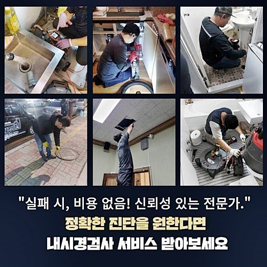
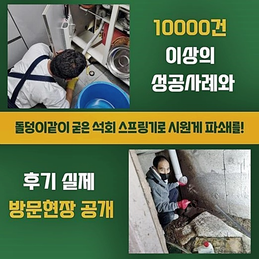
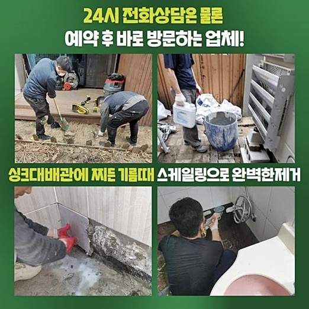
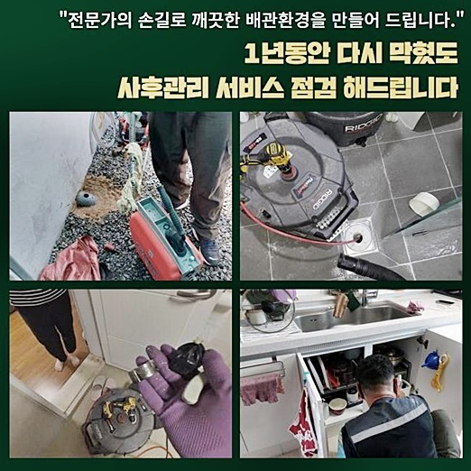
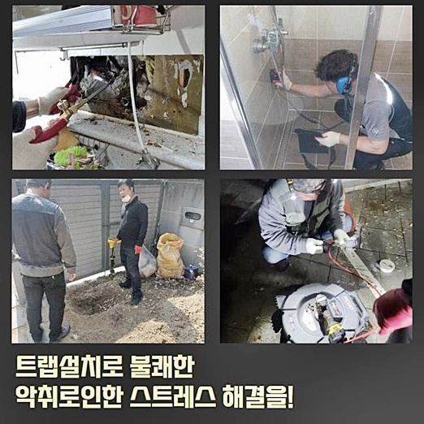
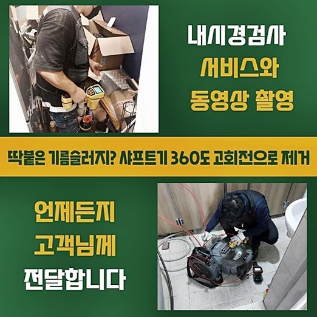

🏠 천안 용곡동세탁실뚫음 청룡동 배관뚫기 설비하는곳
용인시 처인구 배관막힘 전문 시공 후기

📋 작업 개요
- 위치: 용인시 처인구, 수원시 영통구, 화성시 동탄
- 서비스 유형: 배관막힘, 고압세척, 내시경점검
- 작업 일시:
- 업체명: 하수구수사대 (010-5615-2118)
🔍 문제 상황
천안 용곡동세탁실뚫음 청룡동 배관뚫기 설비하는곳
배관막힘이 발발하는 연유는 다채롭습니다
두발뭉치나 음식 건더기로 인해 생길 수도 있으며 기름슬러지가 배수관 구석쪽에 누증되며 때가 지나가서 단단하게 경화돼는 현장도 예측과 다르게 많아요
금번엔 배관트러블이 일어난 지점을 안내해 드리도록 할게요
이처소는 주방공간 사용에 애로사항이 많아 진단을 요망하셨는데요
싱크대 물이 시원하게 안 빠지면 각종 화학제품이나 온수 또는 옷걸이 등을 써서 문제를 타파하고자 하는 고객분들이 많은데요
간소한 형태라면 처리가 가능하겠으나 다각적 원인에 의해 정체가 일어났다면 이런 형태로 수선하기는 힘들죠
요번에 들어갔던 지점은 주방 바닥쪽에서 특별히 액상이 빈번하게 방출되고 하수구에서마저 안 빠져나가는 일이 발생하여 역류증세가 나타나는 형국이었습니다
주방공간은 여과기기가 세팅되어 있어서 선제적으로 찌꺼기들을 걸러내고 나머지가 파이프로 흘러나가고 있었습니다
그럼에도 가는 유분찌꺼기나 침전물은 분리되지 않고 즉각적으로 배수관으로 유입되죠
이로 인하여 잔재들이 점점 하수관에 누증되면 내측에서 배수를 할 수 있는 자리가 계속적으로 빽빽해지게 되어서 물막힘 문제가 나타나죠
보다 구체적 문제점을 간파하기 위해 내시경cctv를 안쪽으로 투입하고 이물들의 상태를 파악하기로 결단하였답니다
주방쪽 배수관은 아랫부분에 자리잡은 장의 밑부분으로 통하는 상황이었는데요

🔎 원인 분석
💡 전문가 진단: 정밀 진단 장비를 사용하여 슬러지의 고착 여부를 판명하고 타격/세척 작업을 실시했습니다.
따라서 해당 지점의 고장을 고치기 위해선 문제가 생긴 처소를 들어내 검사를 진행해 보아야 합니다
다만 이곳과 같이 관로로 연결된 바닥부위에 접근하기 쉬운 상황이면 추가적인 제거시공은 불필요합니다
반면 관로가 복잡하게 구성되어 일상적인 수리가 여의찮은 모습으로 이뤄진 개수대는 타공이 추가되기도 해요
해당하는 시공은 고객님 댁에 방문하여 관련된 상황을 파악한 다음 실시하고 있고 이런 민감한 사항들은 수선 이전 의뢰인에게 양해를 두한 다음 수행합니다
배관카메라를 이용하여 바라본 하수관의 내부쪽에는 상당량의 침전물이 누적되어 있었어요
기름때와 슬러지가 결합하여 사용한 물이 방출되지 못한 거였어요
보편적으로 유분은 수돗물과 혼합되지 않기에 배수관에 기름슬러지가 흘러들면 거리낌없이 소멸되지 않고 파이프 틈새에 누적되기 쉬운데요
또한 슬러지까지 결합하게 된다면 하수관의 측면에 강력하게 감겨버리기에 해결이 난망해지는 것입니다
한두번 쯤은 해당 사안에 대한 해결의 일환으로 끊인 물성분을 뚫어보려 시도해보셨을 거예요
그러나 이 방법은 되레 관로에 부적절한 영향력을 보내기도 해요
통상적으로 주거공간에 시설하는 하수관은 거개 플라스틱 계열인데 이것은 높은 온도에 저항성이 작습니다
이 때문에 끊인 물성분을 넣으시면 하수관이 충격을 받아서 끊기거나 파괴되기도 하죠
따라서 더운물이 아니라 직접적인 접촉을 통해서 안전히 슬러지를 처치하는 게 배수관 정체현상을 고치는 키라고 볼 수 있습니다

🔧 작업 과정
배관트러블을 안전하게 감당할 수 있는 도구는 플렉스샤프트입니다
해당 장비는 내측에 머물던 이물을 파쇄하는 목적을 가지고 있으며 얇고 강한 노즐과 강력한 체인으로 이루어졌고 담당자가 타깃을 확보하고 헤드를 돌리면 노커가 관로의 찌꺼기를 제거합니다
부속품에는 거의 문제를 일으키지는 않는 기기이긴 하나 누가 시행하는지에 따라 종종 트러블이 발현될 수 있습니다
이 때문에 저희측에서도 진중한 마인드로 신뢰성있게 시공을 담당합니다
수년간 누증된 기름물질은 5~10분가량의 분쇄작업으로는 소쇄하기에는 역경이 큽니다
그렇기 때문에 반복적인 작동에 기인하여 속행해야 하죠
답답한 막힘을 유도하던 찌꺼기들을 분쇄기계를 작동하여 빠르게 소거하면 조금씩 완결성 있는 상태로 변모해요
이후 배관카메라를 투입하여서 남아있는 노폐물을 체크하고 있어요
다수의 유분이 빽빽했던 하수관이 청결해졌다는 걸 직관하실 수가 있답니다
미량의 고형물이라고 해도 관로에 체류하는 일이 생긴다면 몇 주 지난 뒤에 또다시 배관막힘이 발발하는데요
물을 사용하면서 진입하게되는 성분과 쉽게 결합하고 뭉치게 되고 이 때문에 물빠짐을 저해합니다
그렇기 때문에 처음 소제할 때 소량의 이물들이라도 잔존하지 않게끔 살뜰하게 수선에 임하여야 해요
반복하여 소제를 실시하면 이윽고 하수관이 정결해진답니다
답답한 막힘을 유발하던 잔재들이 간정히 소멸되는 것을 직시하였고 내시경cctv의 촬영영상을 손님께도 확인시켜 드렸답니다
의뢰인분도 이 모습을 직접적으로 검열해보실 기회가 되었고 관로 정체의 처음부터 끝을 이해하실 수 있었답니다
우리팀은 전체적인 구성을 신뢰감있게 오픈하므로 믿을 수 있는 서비스를 받으실 수가 있는 것입니다
해당현장의 배수관 정체현상을 마감한 다음에는 실제적인 테스트를 진행하게 됩니다
공사의 결실을 검증하려면 배수공의 덮개를 닫은채로 다량의 물을 양동이에 넣어 단번에 부어버리면 관로의 청소 성과를 알아낼 수가 있어요
탁수가 소멸되기는커녕 그 상황이 심화되었었는데 스케일러 기기를 활용해 쉽게 마무리지을 수 있었네요
후회없는 수리업무를 이행하려면 온전하게 처치를 실행하는 업체의 조력이 요망돼요


✅ 작업 완료
높은 수준의 테크닉을 기초로 신망이 두터운 하수관 시공 전문인의 협조를 통하여 살뜰하게 감당할 수 있어요
뚫음을 빈틈없이 완수하고 현장 근방의 세척도 실시하고 배관 공사 현장을 완료했답니다
기계를 작동시키면서 인접지점에 슬러지가 날아갈 수도 있으며 유해성분이 상존할 가능성도 있기 때문에 관련된 클리닝은 빼먹지 않고 시공 후에 완수해 드립니다
이번 배관 공사 현장처럼 건물 내부에서 조치가 가능한 곳이면 관계없지만 침전물이 하수관에 전반적으로 빽빽한 케이스라면 고속 물세정이 요망될 수 있죠
디테일한 내용은 시공 후에 방문을 통해서 가감없이 말씀드릴 예정이니 방문 방문을 요청하길 바랍니다
하수관 시공과 관련된 궁금증이 있다면 늦은 시간이라도 주저하지 말고 전화주세요



⚠️ 하수구 배관 막힘 예방 및 관리 가이드
- ✅ 머리카락, 비닐, 물티슈 등 물에 분해되지 않는 이물질은 절대 흘려보내지 마세요.
- ✅ 기름기 많은 식기는 설거지 전 키친타올로 먼저 기름때를 닦아내세요.
- ✅ 주기적으로 배수구에 뜨거운 물을 가득 부어주어 유지방 고착을 방지하세요.
- ✅ 작업 후 1년 이내 재발 시 무상 A/S 보증 서비스를 제공합니다.
💡 핵심 정리
- 확실한 장비 작업(내시경 점검 및 샤프트 스케일링)으로 원인을 뿌리 뽑습니다.
- 작업 후 1년 이내에 동일한 부위 재발 시 100% 무상 A/S 서비스를 보장합니다.
- 서울 · 경기 · 인천 전 지역에 24시간 언제든 긴급 출동할 수 있도록 항시 대기 중입니다.
❓ 자주 묻는 질문 (FAQ)
🚨 용인시 처인구 배관막힘 문제로 고민이신가요?
정확한 원인 진단과 확실한 시공으로 재발 없는 해결을 약속드립니다.
24시간 긴급 출동 | 서울 · 경기 · 인천 전지역 | 1년 내 재발 시 무상 A/S